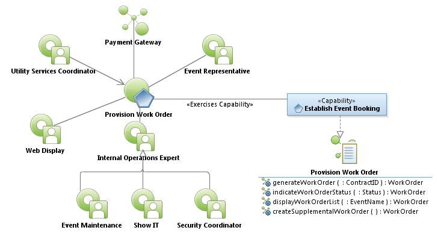
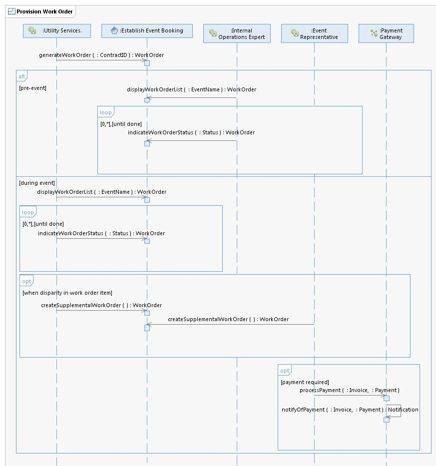

|
Provision Work Order Use Case Specification
Select to enlarge...

Provision Work Order Use Case Model
|
Scope: The Utility Services Coordinator uses the system to
select a Pre Event Plan associated with a Contract ID and generates
associated Work Orders. For pre-event, the Internal Operations Expert
uses the system to display and select indicated Work Order items and
indicates Work Order Status for each item listed. During the event, The
Utility Services Coordinator uses the system to indicate Work Order
Status. The Utility Services Coordinator uses the system to create
supplemental Work Order items when there's a disparity in the Work
Order item. The system provides a similar service for exhibitor Event
Representatives to create supplemental Work Orders. If payment is
required, the Event Representative processes payment with the Payment
Gateway.
Select to enlarge...

Provision Work Order Sequence Diagram
|
Table of Interface Descriptions
| Type/Interface | Description |
|---|
FS069
Establish Event Booking/
generateWorkOrder |
The Utility Services Coordinator uses the system to lookup an Event
Pre-Plan using a Contract ID to list the associated Work Orders. Work
Orders include event representative name, contact information, booth
identification, list of services, and additional notes entered by the
Utility Services Coordinator. The system generates all the Work Order
items to be processed by the Internal Operations Expert. |
FS070
Establish Event Booking/
indicateWorkOrderStatus |
Based on the Work Orders, the Internal Operations Expert
accomplishes the service needs identified in the Work Order. Using a
mobile device, the Internal Operations Expert or the Utility Services
Coordinator uses the system to indicate Status change. Status
indications include pending, completed, and verified. If it's the
Internal Operations Expert, the Status change is completed - if it's
the Utility Services Coordinator, it's verified. Status change captures
user identification, date, time, an associated notes if entered. If a
Work Order item is unable to be accomplished the Internal Operations
Expert leaves the Status as pending and adds a note regarding the
condition of the pending Work Order item. In the case of a floor audit,
the Utility Services Coordinator may also include a note in the Work
Order item. |
FS071
Establish Event Booking/
displayWorkOrderList |
Using a mobile device, the Internal Operations Expert uses the
system to select an Event Name of interest provided by an enumerated
list. The system provides a list of Work Order items ordered by
location (includes booth number). The Work Order listed items are based
on specialized roles such as Event Maintenance, Show IT, Security
Coordinator, and Utility Services Coordinator (gets entire list). |
FS072
Establish Event Booking/
createSupplementalWorkOrder |
If the services in the booth are not the services ordered (i.e.,
disparity in the work order), the Utility Services Coordinator uses a
mobile device to create a Supplemental Work Order. The Supplemental
Work Order may include but not limited to event name, contract
identification, list of services, product information, quantity,
company name, booth number, notes etc. Alternately, the Event
Representative (for exhibitors only) may determine that services are
missing or not operational. The Event Representative uses a mobile
device to generate a Supplemental Work Order containing one or more
service items. Services items may be conditional for example, the order
of additional IP address may require a switch, or a specific Product
may require additional labor, based upon quantity. Any Work Order Item
can be reversed to provide a mechanism for Refund/Credits. |
Payment Gateway/
processPayment |
The Event Representative reviews customer order, enters their
credit card information (credit card number, expiration date, name as
shown on card, card type, security code, zip code, email address), and
processes the payment for their order. |
Payment Gateway/
notifyOfPayment |
The Payment Gateway sends the Event Representative and Utility
Services Coordinator an email notification of processed payment which
includes contract ID, event name, payment total, last 4-digits of card. |
|
{kind=link}
{kind=link}